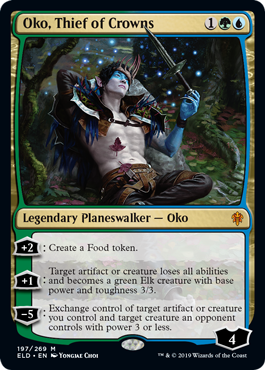
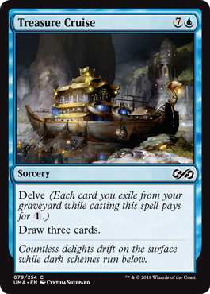

Oko: A Returning Player’s Perspective
Now, I started writing this before Oko was banned but even after the Ban, I feel like I have something to say.
So I was a very into Magic a few years ago. I came into the game at the end of the Return to Ravnica block, my first event and one of the first times playing was an event called a “Magic Celebration” in 2013 where they handed out free decks and packs. And I was hooked. I was a paper player first, quickly grew tired of Mono-Black Devotion Standard hell and moved into Modern, and played Modern essentially twice a week at my LGS for two-ish years. I ended up having a lot of lifechanging events in 2016ish and I couldn’t keep playing.
I tried Magic Online and even built a Pauper deck, but the UI was just atrocious.
Then came Magic Arena. I got on it while the beta was going, wow a year ago now. And I’ve been hopping in and out every few months. My life shaped up recently in a way I could play a lot more Magic, and since rotation had just happened it would be less difficult for me to get back into Standard.
Oko, Bane of Standard⌗

Then came Oko. Oh Oko. Wonderful, terrible Oko. How I hate you.
Well I should say the first boogeyman I faced was Field of the Dead but that was banned quickly, but I’ll get back to that.
Dear dear Oko. I guess I should explain what Oko is and why it’s a problem first. Oko is a 3 mana Blue Green planeswalker. That’s already fairly powerful, creating a permanent that has to be dealt with on turn 3, or turn 2 if you ramp (this is green they’re playing). It comes in at 4 loyalty, and has two plus abilities. +2 you create a Food Token (essentially an Artifact that can be sacrificed to gain life). Or +1 and you can turn any artifact or creature into a Vanilla 3/3 Elk. And that’s where it gets powerful. On turn 3, or turn 2 if you/your opponent is lucky, you create a threat that has to be dealt with. At the very least, it is a 6 Loyalty Planeswalker that created an artifact, worst case you’re dealing with a 3/3 creature and a 5 Loyalty Planeswalker. That already is powerful enough. But Eldraine has a lot of support for Food decks, so getting artifacts to turn into 3/3s is trivial.
Nice! 69% of the #MythicChampionshipVI field registered Oko, Thief of Crowns.
— PlayMTG (@PlayMTG) November 8, 2019
Check out our full Standard Metagame breakdown by @karsten_frank here: https://t.co/L6XUR6WoGk
Tune into https://t.co/we35sjOtfe to watch LIVE! pic.twitter.com/BaiAGi9F0y
The deck is so powerful, it completely dominated the standard Pro Tour Mythic Championship. About 69% nice of decks in the tournament used Oko. The three most popular deck types were Sultai Food, Simic Food, and Bant Food. All of them essentially the same deck but with slightly different utility cards. And the Magic community is not happy.
Now, there’s a lot of articles and reddit posts (so many reddit posts) talking about how bad Oko is and how terrible it is for diversity and how bad it is as an experience, and how Wizards keeps repeating mistakes. And there’s commentary about Oko from the new player perspective, who don’t understand why Oko is good and who are frustrated because their first experience of competitive Magic is a field dominated by Oko.
But it’s frustrating for a returning player for different reasons. Magic boogeymen have kept me from playing Magic, and this is the worst example in a LONG train of mistakes Wizards has made.
Magic’s Former Boogeymen⌗
As I mentioned above, in the short time period that I was playing MTG, I encountered my fair share of boogeymen. None of them as oppressive as Oko but perhaps worse because of how long lived they were. The first rotation I went through, Mono-Black Devotion was an oppressive force. Mono-Black Devotion was so powerful that essentially the entire Theros standard, the entire Standard year, it was THE tier 1 deck to play. Three other sets came out and the deck went essentially unchanged. Next standard came the wonderfully terrible Siege Rhino and the Delve mechanic. Siege Rhino is a card so powerful that the moment it came out it started being played in Modern so much a deck reformed around it, and it even got fringe Legacy play. And the Delve mechanic was so powerful that two cards, Treasure Cruise (aka Ancestral Recall 3.0) and Dig Through Time were eventually banned in Modern and Legacy, and restricted in Vintage. For a new card to get not only banned in so many formats but to have TWO cards restricted in Vintage was a HUGE oversight in power level. And the worst part is that Delve, a mechanic that reduces the cost of a card depending on what you have in your graveyard, was printed in the same set that Fetchlands were. Wizards has been printing mistakes for a long time.

The biggest issue back then is that Wizards didn’t do Standard bannings. All these problems were just left to exist in Standard, with the expectation that players would discover a way to play around these cards, or that a new set will push the problem cards out. When oppressive cards went unchecked, Wizards eventually shrugged their shoulders and said “these cards will rotate eventually.” This was obviously a terrible mentality. And thankfully Wizards has turned around and will actually ban in Standard. But we shouldn’t be at the point where there’s multiple Standard bannings a year.
What’s the solution?⌗
I don’t know. But to a player who is returning, it feels like I’m coming back into a game that pushed me out, only to have it push me out again. In late 2013, played maybe 4 or 5 Standard FNMs before I gave up on Standard. As a new player with no collection and no money, I preferred playing garbage modern decks and losing literally every match to facing the same 3 decks, and facing Mono-Black Devotion every week. And when I come back in, I come back in to face only Oko.
This whole situation to me shows that Wizards has not learned their lesson and needs to change how they balance Standard. Because this has continued to be an issue. Eldrazi were oppressive during Battle for Zendikar. An Infinite combo as powerful as Splinter Twin just happened to slip past Wizards during Kaladesh. The Field of the Dead combo was banned weeks after it started being played. And now, a month after Eldraine came out, they banned Oko. This does not breed confidence into players. For new players it can be scary because they are learning that their favorite decks and cards can get banned out of nowhere. But for a returning player, it shows me that in the time I was gone Wizards is still repeating their same mistakes, they just change how they deal with the fallout.
Wizards supposedly created Play Design specifically to fight this. They were supposed to catch horribly broken cards like these. However, instead it seems like more broken stuff has come out since Play Design has come to be. It almost makes you wonder, or at least makes me wonder, if Wizards R&D actually puts less effort into balance, relying on Play Design to catch their mistakes. And it’s not Play Design that’s catching their mistakes. It’s Team ChannelFireball. Or Team SCG or It’s the Pro players. Their mistakes are caught after the cards were printed, years after the design of the set was finalized.
I don’t have a solution. Wizards recently released an article stating that they’re aware there’s a problem with the Play Design team. For now Oko is banned and I can play Magic again. I can echo other people and say that this is why there should be an emphasis on having more formats in MTGA, that Brawl should be daily or that Pioneer cards being added to MTGA is a priority because of Standard environments like this one where players get burned out. But my voice will be lost in the larger chatter of Magic. Everyone else is saying other formats need more support. People have been yelling about formats other than Standard getting more love since Standard was called Type 2. So that beating a dead horse. But I will say that Magic is my favorite game of all time. I can confidently say that now, having quit, having gone from playing GPs to nothing and come back, Magic is my favorite game of all time. And I do not want to have to fight Wizards every step of the way due to broken cards getting printed. I love powerful cards as much as the next player. But what brings me back to Magic is the diversity. The feeling like every game is brand new, every game is a challenge. The feeling like there’s endless things to learn. That, even when you’ve been playing 5 years, you can still learn something new, and someone new can come out of nowhere and have an impact. And all that goes away when every single game is a mirror match, and all the games play out the same. There’s room for that. But Magic is not the game for that.
Image Courtesy of Wizards of the Coast